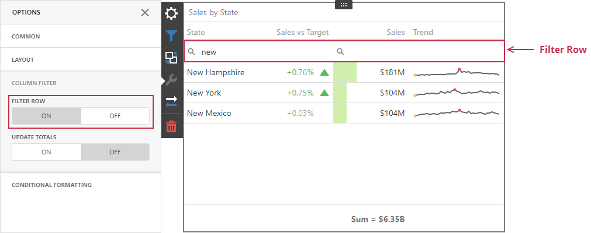

Column Filter for a Grid Item on the Web
Column filters allow users to search data in the Grid item. These filters do not affect data outside the Grid.
Filter Row
The filter row allows a user to filter data by individual column values.
Open the grid's Options menu and go to the Column Filter section to get access to the filter row. When the filter row appears, a user can enter the condition in the text box to filter column values:

The filter row's cells can be of different types (for example, text boxes for string and numeric values, calendars for dates, and so on).
Update Totals
A user can configure a Grid item to reflect changes in column values and recalculate totals based on the applied column filters. Open the grid's Options menu and go to the Column Filter section to get access to this setting. As a result, the Grid item recalculates totals depending on the applied column filters:

Limitations
Filter Row Limitations
The following Grid columns do not support the filter row:
- Dimension (for Image display mode only)
- Measure (for Bar display mode only)
- Sparkline
- Delta
A Grid item does not support a filter row for window calculations and calculated fields that use the w-function if the Update Totals option is enabled.
Update Totals Limitations
You cannot enable totals recalculation in OLAP data sources.
Other Limitations
Although column filters within a Grid item are case-insensitive, totals are calculated on the server and their case-sensitivity setting depends on the database settings. If case-sensitivity settings are different, the total value can differ from the Grid's data. Make sure that the Grid item and the database use the same case-sensitivity settings.